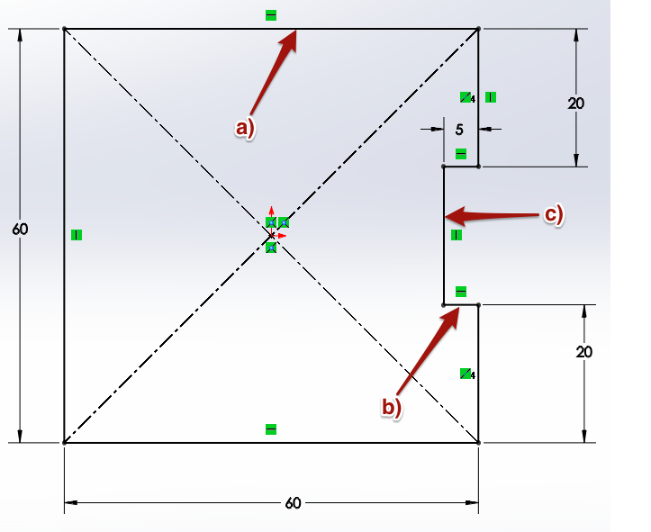
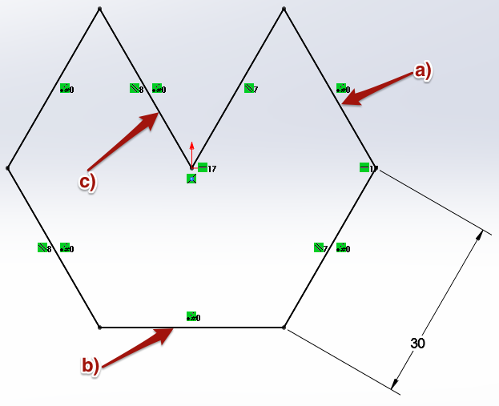
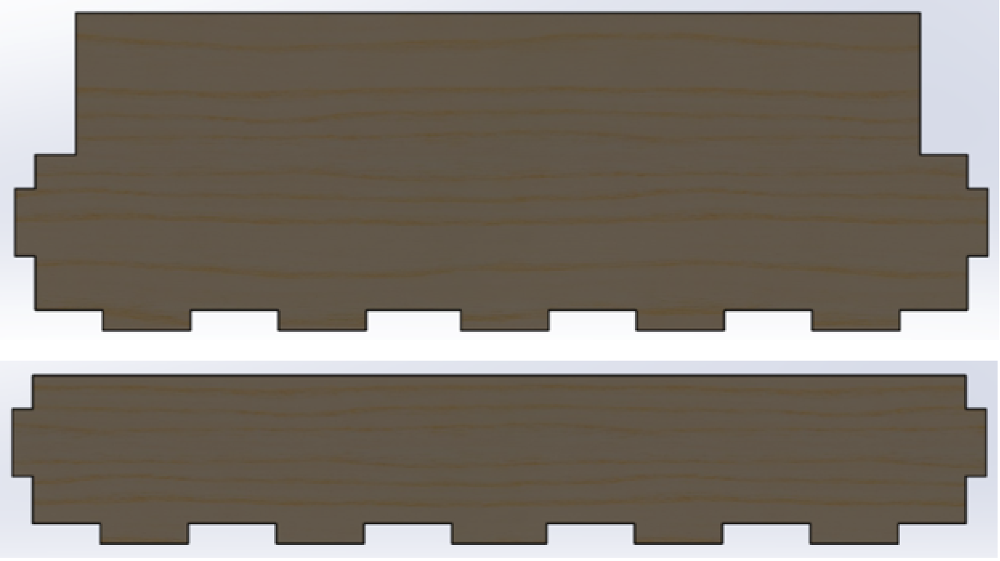
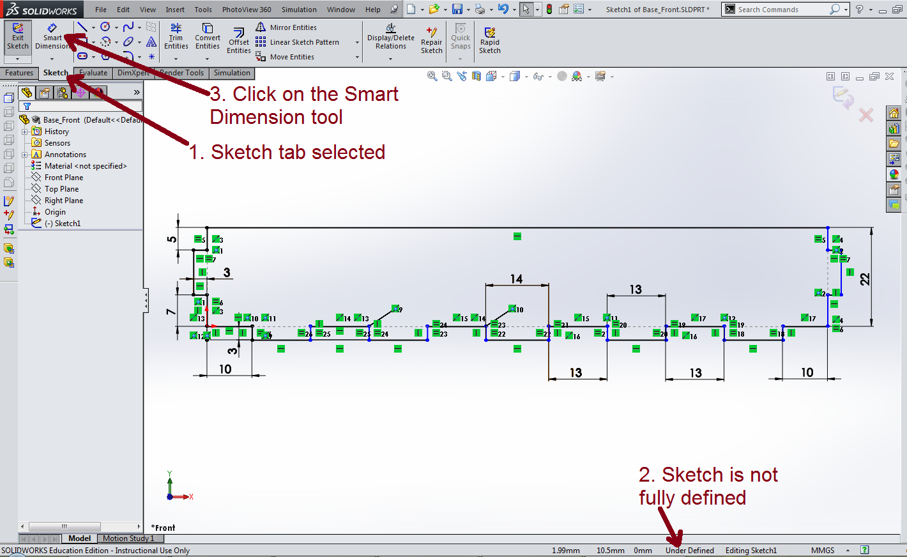
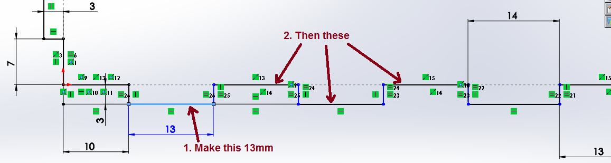
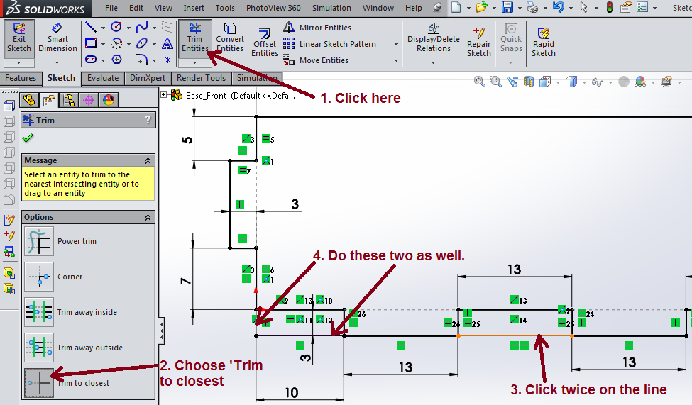
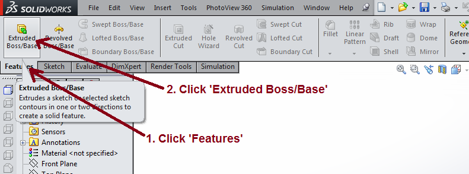
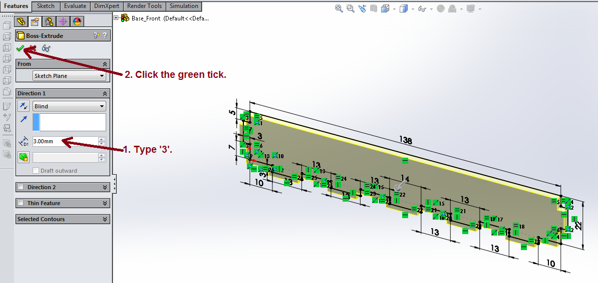
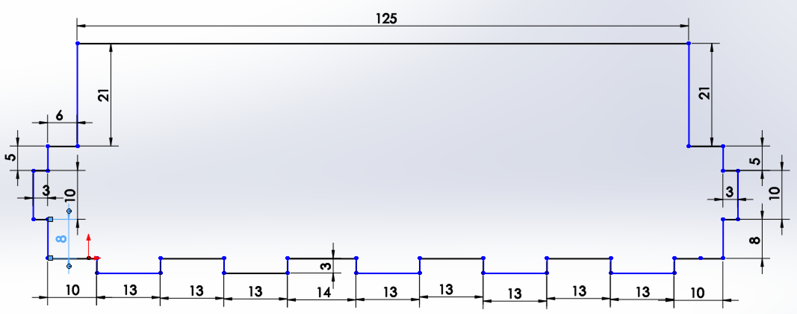

A Project Storage Box
Table of Contents
1 Sketchy Character
- We're going to use a program called Solidworks to design our box.
- Solidworks is a 3D CAD program
- You'll get lots of experience with Solidworks later on in the year, so for this section of the project, you'll just be creating a couple of the Solidworks parts and assembling them.
- In Solidworks you start by creating a 2D sketch. You can then convert this to a 3D part. You can then join parts together to make a 3D assembly.
Try It
- In Solidworks you have to ensure all your drawings are fully defined.
- This means that the software must know the dimensions of every line you draw.
- Quite often the software is able to work out a dimension of a line, from others you have provided.
- Look at the diagrams below. They have all been fully defined. Try and calculate the value of the missing dimensions labeled. You can add the dimensions to the Portfolio.md.



Design It
- Below is a photograph of the parts we're going to design using Solidworks.
- Notice the finger-joints on each part.

- Download this file and then open it in Solidworks. This is the unfinished sketch of the front of the base of the box.
Design It
- Let's add some dimensions to the drawing you've opened in SolidWorks.
- The instructions below will walk you through the process of using the dimension tool to add the missing dimensions needed to finish this part.
- When you are finished, your drawing should be fully defined.

- Make sure the
Sketchtab has been selected. - You'll see that the sketch has not yet been fully defined.
- Click on the
Smart Dimensiontool from the tool bar.

- Click the top line of the sketch and drag upwards a little.
- Release the mouse button and you should see the dimension has been added.
- This dimension should be 138mm so we can just click the green tick.

- As you look along the bottom edge, you may have noticed that there are some dimensions missing. In order for SolidWorks to fully understand our model, we'll need to add these in. Using Smart Dimension again, add the dimensions to the four bottom-left hand corner finger joints in the same way you did before. Each of these should be 13mm.
- Your sketch should be fully defined.
Design It
- To finish off this sketch, we need to do some triming. This allows us to delete lines that we don't want as we build our model parts.

- Click on the trim tool in the toolbar.
- From the context menu on the left of the screen, make sure
Trim to closesthas been selected. - Now your cursor should now be displaying a scissor icon. Click on the upper line as shown in the diagram above. You will need to click twice to remove this line completely - you'll see why when you start designing your own parts.
- The bottom corner also has some lines we don't need. Click once on each of these to remove them too.
Design It
- To turn a sketch into a 3D part, we need to extrude it.

- Click the
Featurestab to get the 3D tool bar. - Click on
Extruded Boss/Base.

- In the context menu on the left, change the Depth to 3mm, as this is the thickness of the MDF we are using.
- Click the green tick to carry out the extrusion
- Your part should now be complete, so take a screenshot for your portfolio.
Save It
- Save the file in your Documents as baseFront.SLDPRT
Badge It
- Now let's see if you can dimension, trim and extrude a sketch on your own.
- Download this file and open it in Solidworks. This will be the sides of the box; when you've got a full set of parts, you'll use this one four times to build the box.
- Here is the finished sketch that you need to create, showing all the relevant dimensions.

- When you have finished the sketch, you'll need to extrude it by 3mm.
- Take screenshots of your finished sketch and part and then add them to your Portfolio.
- Silver: Part is trimmed, some dimensions added.
- Gold: Part is fully defined and extruded.
- Platinum: Change its appearance to 'rough pine' to match the image in the 'Design it' section.
Save It
- Save the badge task file in your Documents as side.SLDPRT